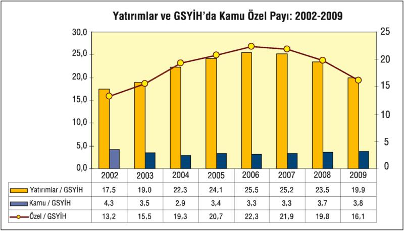
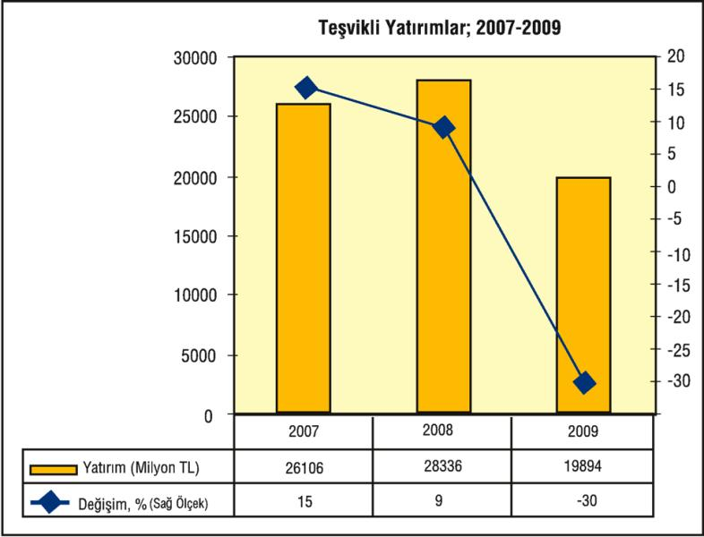

Türkiye'ye benzer gelişmekte olan ülkeler, 2002-2007 yıllarını kapsayan dönemde milli gelirinin (GSYH) yüzde 27,3'ü kadar yatırım yaparken Türkiye'de bu oran yüzde 20'de kaldı.
TÜİK'in verilerine göre kamu ve özel sektörün toplam yatırım harcamaları 2008 yılında bir önceki yıla göre yüzde 5 oranında azalırken, 2009 döneminde yapılan yatırımların GSYİH'ya oranı yüzde 20'nin altına indi. 2009'da kamu sektörünün yatırımları bir önceki yılın aynı dönemine göre görece arttı ve GSYİH'daki payı yüzde 4'e yaklaştı. Buna karşılık özel sektör yatırımlarının GSYİH'daki payı yüzde 16'ya kadar düştü.
Hazine'nin yeniden piyasalardan yüksek miktarlarda iç borçlanmaya giderek tasarrufların büyük bölümünü çekip özel sektöre kaynak bırakmaması ve ekonomiye duyulan güvensizlik, yatırım ortamını da olumsuz etkiledi.

Kaynak: TÜİK
Hem iç hem de dış talepte yaşanan daralma, yatırımların yüzde 30'a yakın azalması, sanayi sektörünü üretiminin 2008 yılından başlayarak hızla azalmasına yol açtı.
| YATIRIMLAR VE GSYİH'DAKİ PAYI; 1998 FiYATLARIYLA, MİLYON TL, % | ||||||||
| 2002 | 2003 | 2004 | 2005 | 2006 | 2007 | 2008 | 2009 | |
| Toplam Yatırımlar | 12.685 | 14.482 | 18.589 | 21.822 | 24.714 | 25.481 | 23.912 | 19.332 |
| Kamu Sektörü | 3.103 | 2.634 | 2.460 | 3.074 | 3.155 | 3.353 | 3.780 | 3.695 |
| Özel Sektör | 9.581 | 11.848 | 16.129 | 18.748 | 21.560 | 22.128 | 20.132 | 15.637 |
| Gayri Safi Yurtiçi Hasıla | 72.520 | 76.338 | 83.486 | 90.500 | 96.738 | 101.255 | 101.922 | 97.088 |
| Yatırımlar/GSYİH, % | 17, 5 | 19, 0 | 22, 3 | 24, 1 | 25, 5 | 25, 2 | 23, 5 | 19, 9 |
| Kamu/GSYİH, % | 4, 3 | 3, 5 | 2, 9 | 3, 4 | 3, 3 | 3, 3 | 3, 7 | 3, 8 |
| Özel/GSYİH, % | 13, 2 | 15, 5 | 19, 3 | 20, 7 | 22, 3 | 21, 9 | 19, 8 | 16, 1 |
Kaynak: TÜİK
Hazine verilerine göre, 2009 yılının tamamında teşvik belgesi alan yatırımcılar yaklaşık 20 milyar TL'lik yatırım öngördü. Bu sayı, 2008'de 28 milyar TL idi. Yani kriz yılı 2009'da yatırım niyetleri yüzde 30 azalmış bulunuyor. Ekonominin yüzde 5'e yakın küçüldüğü, müthiş bir iç ve talep düşüşünün yaşandığı, doğrudan yabancı sermaye girişlerinin gerilediği bir yılda, yatırım iştahının yüzde 30 azalması şaşırtıcı değil, beklenir bir şey. Kaldı ki, bunlar yüzde 6'lık enflasyondan da arındırılmamış veriler. Enflasyonu da dikkate alınırsa en az yüzde 35 yatırım gerilemesinden söz edilebilir.

Kaynak: Hazine Müsteşarlığı
Hazine, 2009'un Ocak-Temmuz döneminde öngörülen yatırımların toplamının yaklaşık 8 milyar TL, yeni bir teşvik paketinin uygulandığı Ağustos-Aralık döneminde de öngörülen yatırım tutarının da 12 milyar TL olduğunu belirtiyor. Yani, kurumlar/gelir vergisi indirimi, sosyal güvenlik primi işveren hissesinin Hazine tarafından karşılanması, faiz desteği, yatırım yeri tahsisi, KDV istisnası, gümrük vergisi muafiyeti gibi teşviklerin verildiği 2009 ikinci yarısında, yatırım niyetleri, 2008'in ikinci yarısından yine de 1 milyar TL kadar geride kaldı. Otomotiv firmaları Tofaş ve Oyak Renault, 2,5 milyar TL'lik bir modernizasyon yatırımı öngördüler, 2,5 milyar TL'lik sanayi yatırım niyeti daha var. 2,5 milyar TL yatırım niyeti de enerjiye. Ve bölgesel olarak da bu yatırımların yine ağırlıklı kısmı, üçte ikisi Marmara, Ege, Akdeniz bölgelerine yapıldı.